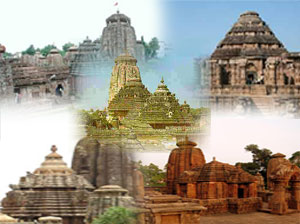
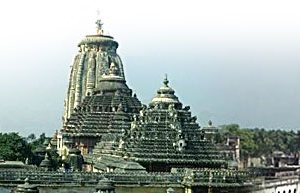
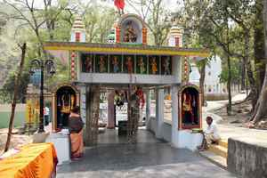

Odisha Temples & Tribes Tours
Eastern Golden Triangle Tours
Olive Ridely Tours
Adventure Tour to Odhisa
Odisha Tours
Best of Odisha Buddhist Tours
Romantic Konark & Puri Tours
Destination Covered : Odisha.
Tour Duration : 11 Nights & 12 Days.
Day 01 :Arrive Bhubaneswar
Bhubaneshwar is the capital of the ancient kingdom of Odisha (Orissa), and is famous as the temple city of India. Travel through Odisha (Orissa) is a melange of art, architecture and long-established customs.

City tour of Bhubaneswar, which has some stunning temples clustered around the Bindusagar Tank. Of the original 7000 only 500 remain dating from the 7th century to the 11th century AD. Of these the most outstanding is the 11th century Lingaraja Temple, which celebrates the zenith of Odisha (Orissa) art; and the late 10th century beautifully decorated Muktesvara Temple, which marks the end of the phase of temple building in Odisha (Orissa). Outside the city limits are the Udayagiri and Khandgiri caves, harking back to the time of Jain and Buddhist occupation of this region in the 2nd century BC. The Jain caves are among the earliest in India and all the caves were built or excavated during the 150 years before Christ. In contrast to the stark decor of the Jain caves, the Buddhist caves are decorated with excellent friezes and sculptures.
Day 02 :Bhubaneshwar - Dhauli - Konark - Puri
On the drive to Konark (75km), we will stop at Dhauli where the Mauryan Emperor Ashoka renounced violence and embraced the teachings of Buddha. We visit the Peace Pagoda known as Shanti Stupa built in early 1970s by the Japanese. We also stop at two ancient rock edicts, today eclipsed by the presence of the Pagoda. Dating from 260BC they outline Ashoka's detailed instructions to his administrators to rule with gentleness and fairness. Our next stop is the colourful village of Pipili where we can see Orissan handicrafts, the speciality being the famous applique work.
Visit to the Chariot of the Sun God temple, built by King Langula Narasimha Deva in the 13th century AD during the golden era of Orissan art. This temple, among the crowning works of Orissan architecture and sculpture, is sheer poetry in stone. Everyday the Sun God rises from the horizon, across the shimmering blue waters of the Bay of Bengal, and casts the warmth and luminosity of his revitalising rays on the sanctum sanctorum, circling the temple during the course of the day, illuminating the three brilliant images of the sun - in the morning, at mid-day and in the evening, as day makes way for the night. As you approach the water, you will see rising from the golden sandy beach, one of the country's most vivid archaeological treasures - the Surya Mandir (Sun Temple). For a millennium, this temple served as a beacon to the ancient and medieval mariners. Despite the fact that the Black Pagoda, as it was referred to by European soldiers who wanted to distinguish Konark from the whitewashed Jagannath Temple in Puri, lies in ruins, the structure is magnificent. Afternoon drive to Puri takes about 2hrs.
Day 03 : In Puri
Puri is one of the four principal holy abodes in India, as well as a popular beach resort. It offers the rare experience of watching both the sunset and sunrise from the same beach. Pre-Dravidian and pre-Aryan history relates that a tooth of Buddha was temporarily enshrined in Puri before being moved to Sri Lanka.

Supporting the theory that Buddhism prevailed in this area, the Jagannath Temple, dedicated to the Lord of the Universe, and the main attraction in Puri, was believed to have originally been a stupa (pagoda). The extraordinary form, Jagannath takes in this temple, is said to be the unfinished work of the craftsman god, Vishvakarma. Angry at Vishnu, he left his interpretation of the 'Lord of the Universe' incomplete.
Day 04 : Puri - Chilka Lake
The drive to Chilka Lake takes us through picturesque countryside and charming villages. Chilka lies in the heart of coastal Odisha (Orissa). Spread over 1,100 sq km, this is the country's largest lake. Dotted with islands, Chilka has a rich variety of aquatic life and is a bird watcher's paradise, particularly when migratory birds arrive in winter. Sunset and sunrise are memorable experiences here.
Day 05 : Chilka Lake - Gopalpur
Rising early we visit the lake to view the avian life and the Kalijai Temple, abode of the presiding deity of the lake, located on a tiny island. In winter the lake attracts migratory bird from Iran, Central Asia, and as far as Siberia. We will also be able to watch the fishermen at work, who come here in search of prawns, mackerel and crabs. After breakfast we drive to Gopalpur-on-Sea, an ancient seaport not often visited by tourists. Sand dunes, groves of coconut palm and casuarinas separate the small town from the beach.
Day 06 : Gopalpur - Taptapani
Morning, relax at the hotel; afternoon drive to Taptapani (150km). Luxuriate in the small hot springs in this peaceful village: water from the hot sulphur springs, discovered here in a forest setting, is channelled to a pool for bathing. There is a shrine of goddess Kandhi inside the original pool, which is believed to cure infertility. You may also like to visit Chandragiri, 36km away, where a community of Tibetan refugees resides, and supports itself by weaving carpets.
Day 07 : Taptapani - Rayagada
Odisha (Orissa) has the third highest concentration of tribes in India, and because of the remoteness of the area where they live these tribes are untouched by modern ways of life. Each has a distinct language and pattern of social and religious customs. Though economically challenged and a very low rate of literacy, the tribal groups have highly developed artistic skills as seen in their body paintings, ornaments, weaving and wall paintings. Music and dance also are an integral part of their ceremonies and seasonal festivals. During the next few days we will be visiting some of these tribal settlements.

On the 220km drive today we will stop at the villages of the Saoras, a major tribe who live in hilly areas. In contrast to other tribes who live in clans, the Saoras live in extended families descended from a common ancestor. The village is administered by a headman assisted by a religious leader and village shamans (medicine men), who are able to communicate with deceased ancestors. The walls of the mud houses are decorated with remarkable paintings and traditional designs. Monday is the market day for this tribe so we will have time to wander through the tribal market.
Day 08 : Rayagada - Kothgarh - Rayagada
The excursion today takes us to the Kothgarh tribal area (180km). The inhabitants speak Kuvi - a language derived from the Dravidian strain of Southern India. Human sacrifice has now been replaced with animal sacrifice, offering sacrificial blood to their supreme goddess, represented by a piece of wood or stone, to ensure fertility of the soil. The members of this tribe still use bows and arrows to protect themselves from wild animals. Tuesday is the market day. Return to Rayagada.
Day 09 : Rayagada - Jeypore
Rayagada - Jeypore Drive to Jeypore (250km/7hrs) through Chatikona, visiting a few Dongariya Kondh villages en route.
Day 10 : Jeypore - Onukudelli
The area we visit today is the home of the approximately 6000 members of fierce Bondas (naked people) of Tibetan-Burmese origin. They live in remote hills and keep themselves isolated. Bondas grow rice by shifting cultivation and domesticate cows and goats and can only be seen when they come to trade at the local market. Therefore, we must time our visit to coincide with the weekly market-day on Thursday. The Bonda women are conspicuous with their bead necklaces, striking brass and silver necklets, and their shaved heads decorated with plaits of Palmyra leaves. We will also visit the colourful Gadabas, a Munda tribe who speak in an Austro-Asiatic dialect.
Day 11 : Onukudelli - Gupteswar
A day excursion to Gupteswar (140km) to visit the caves, which are believed to have been the refuge of Lord Rama during his fourteen years of exile, and the place where he worshiped Shiva. On the way we will visit a few Dhuruba villages. Return to Jeypore.
Day 12 : Jeypore - Vishakhapatnam - Delhi
Today we leave hotel early in the morning at 0600hr and drive to Vishakhapatnam (210km/4hrs.) and straightaway transfer to airport for flight to Delhi. Late night transfer to the International airport.